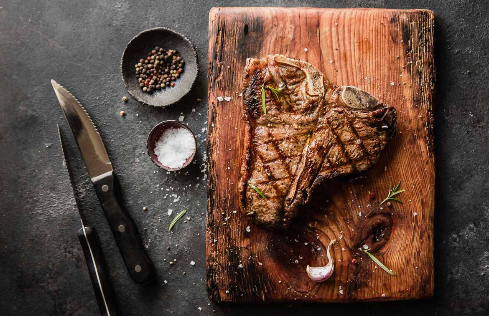

Powrót
Stek T-BONE

Składniki:
- dobrej jakości stek o grubości min. 3 cm
- oliwa, sól i pieprz
- masło
- czosnek
- gałązka rozmarynu
Przepis:
- Dobry, sezonowany stek nie potrzebuje marynowania a do doprawienia wystarczy oliwa, sól i świeżo mielony pieprz. Jest kilka szkół, które mówią o soleniu, nie soleniu, soleniu ale wcześniej... nie wchodzimy tu w polemikę, ale dzielimy się naszym doświadczeniem
Mięso przed położeniem na ruszt powinno mieć temperaturę otoczenia, dlatego wyciągnij je z lodówki na 30 minut przed grillowaniem. Natrzyj stek oliwą i oprósz grubą warstwą soli i pieprzu. Ważne aby przyprawione mięso nie czekało na grillowanie, dlatego zrób to chwilę przed położeniem na ruszt.
- Rozgrzej ruszt ustawiając pokrętła w pozycji HIGH, kiedy temperatura wewnątrz grilla osiągnie 300ºC możesz zacząć grillować. Jeżeli masz termometr z dwoma sondami (#61935), włóż jedną z nich w najgrubszą część mięsa ale tak, żeby nie dotykała kości. Na termometrze możesz wybrać sobie stopień wysmażenia mięsa lub sam ustawić wybraną temperaturę.
- Na rozgrzany, posmarowany tłuszczem ruszt kładziemy mięso. Naszego T-Bone'a grillujemy przez 10 minut (przy grubszych stekach, mięso może potrzebować do 14 minut) obracając go w między czasie 4 razy czyli grillujemy metodą Ten and Two. To metoda o której więcej przeczytasz w tym artykule, daje Ci gwarancję uzyskania diamentowego wzoru na mięsie. Po 10 minutach stek osiągnie temperaturę wewnętrzną ok. 55ºC. Wtedy ściągamy go z grilla i zostawiamy na kilka minut aby odpoczęło w tym czasie temperatura powinna podnieść się do 58-60ºC. Jeżeli jest chłodniejszy dzień możesz przykryć mięso papierem rzeźniczym Broil King.
- W trakcie grillowania na bocznej kuchence rozpuszczamy masło do którego dodajemy rozgnieciony dłonią ząbek czosnku oraz gałązkę rozmarynku. Steka podajemy wyciętego z kości tak aby rostbef i polędwica były podane osobno. Mięso możesz pokroić w grube plastry i polać roztopionym masłem.